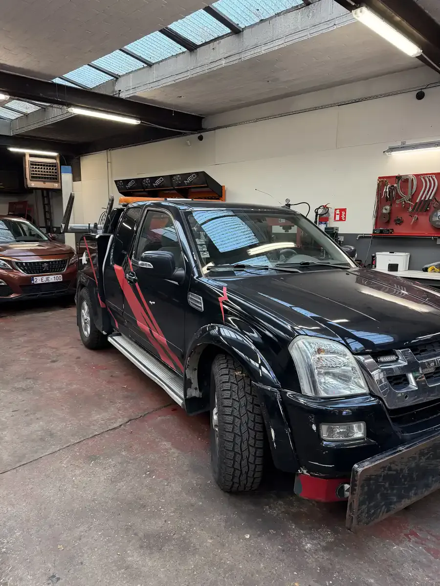
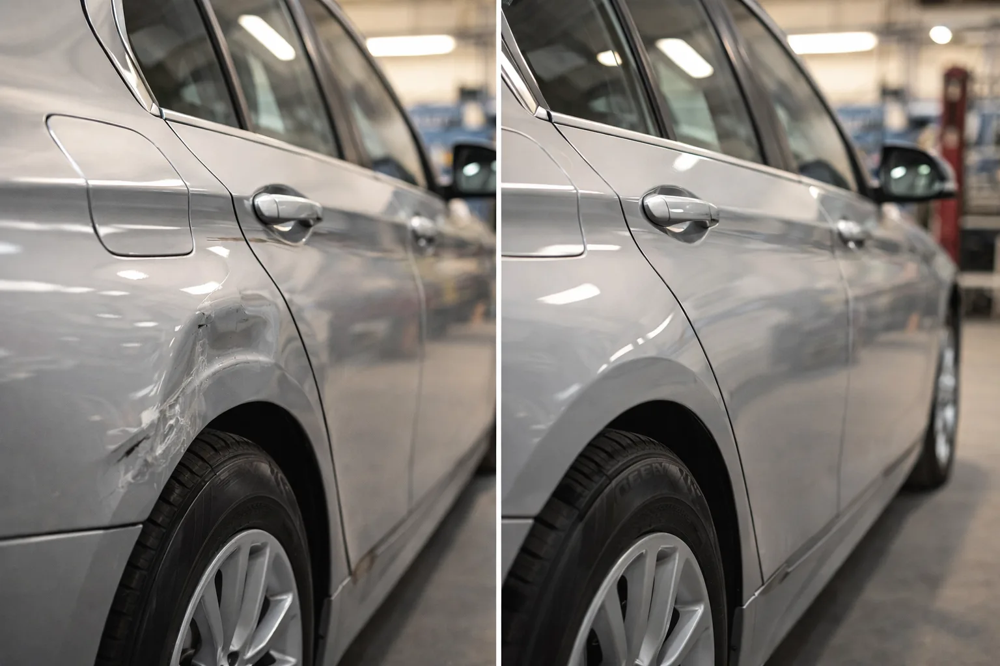
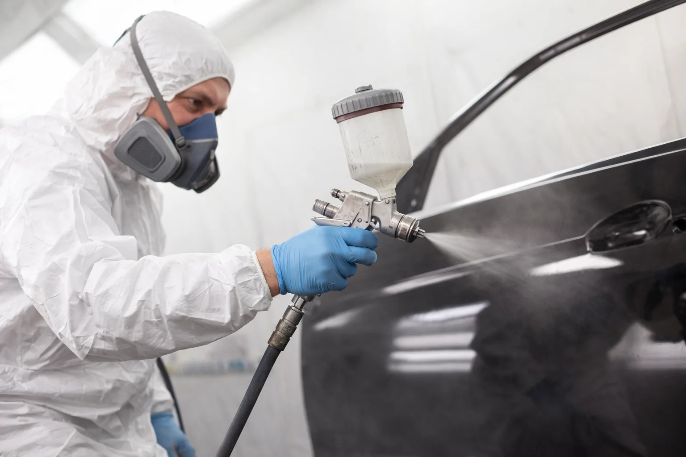
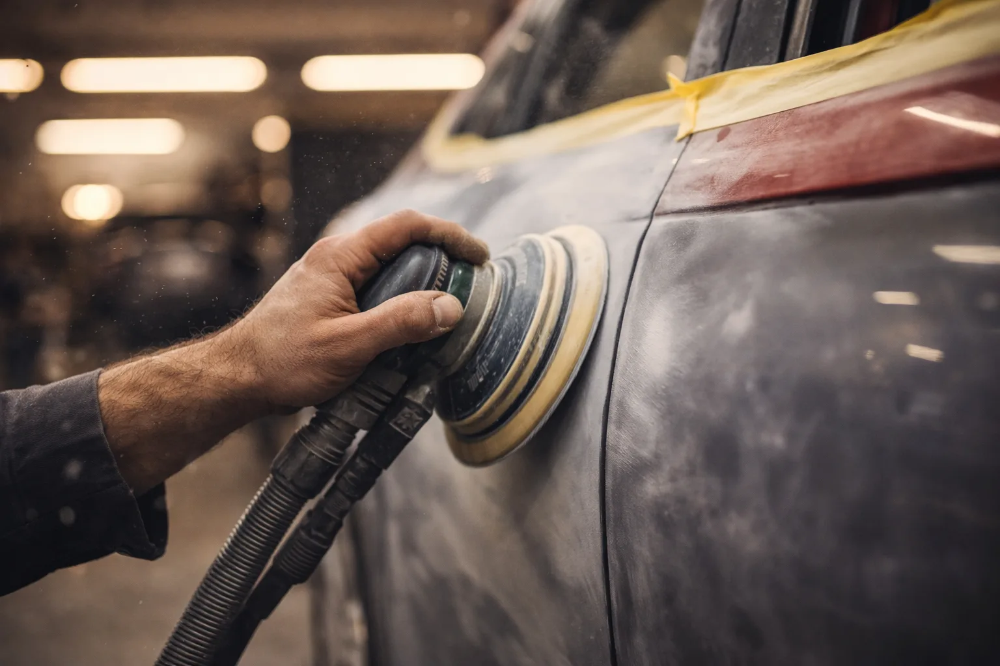
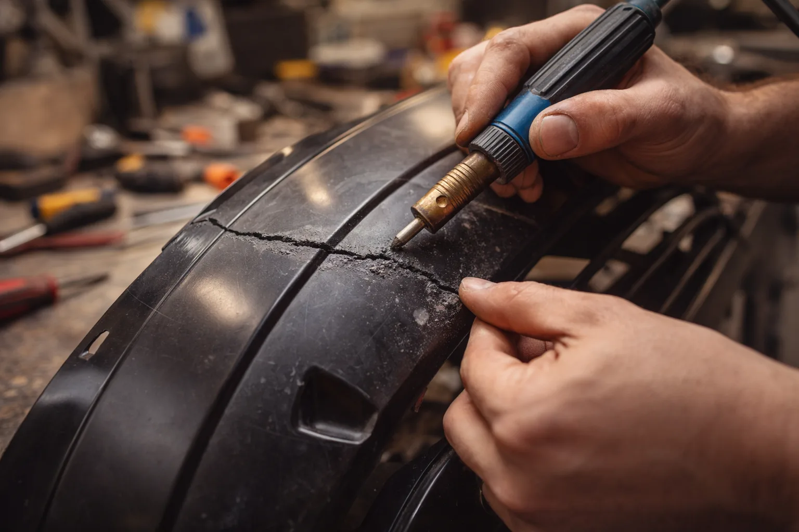

>Parkeerschade? Deuk in het portier? Beschadigde bumper? Bij DMT AUTOGROUP in Zaventem herstellen we uw carrosserie — van een kleine kras tot een volledige herstelling. We werken op alle merken en geven uw auto terug als nieuw.
Is uw carrosserie beschadigd en zoekt u een betrouwbare carrossier in Zaventem? DMT AUTOGROUP herstelt alle soorten carrosserieschade. Ongeval, parkeerschade, hagelschade of gewone slijtage — we brengen uw auto weer in orde. Gekreukt plaatwerk, vervormde elementen, vervanging van panelen: we regelen alles in ons atelier.
We zien regelmatig mensen binnenkomen met een offerte van 1400 euro van een andere garage. Wij doen hetzelfde werk voor 30-40% minder. Vorige week kwam een klant met een offerte van 2000 euro van een concessie voor een ingedeukt spatbord. Wij hebben dat hersteld voor 700 euro, zelfde resultaat.
Gaat u via de verzekering? Dan nemen we het volledige dossier op ons. Aanrijdingsformulier, gedetailleerde offerte, documenten naar uw verzekeraar — u krijgt gewoon uw auto proper terug. De verzekering dekt vaak de herstelling. Betaalt u liever zelf om een premieverhoging te vermijden? Dan adviseren we u de beste optie. De offerte is altijd gratis. Heeft uw voertuig ook mechanische problemen na een botsing? Dan regelt onze autogarage het mechanische deel tegelijk.


Een deuk op de motorkap, een ingedeukt portier op een parking — het overkomt iedereen. Onze carrossier verwijdert deuken zonder altijd te moeten herspuiten. Waar mogelijk gebruiken we paintless dent repair (PDR) om de originele lak te behouden en u geld te besparen.
Voor kleine parkeerdeukjes kost uitdeuken zonder spuiten vaak 150-250 euro in plaats van 600-800 met een volledige lakbeurt. We bewerken het plaatwerk van achteren met speciaal gereedschap. Geen plamuur, geen lak, geen waardeverlies op uw voertuig. Het resultaat is snel — vaak op dezelfde dag.
Als de deuk te diep is of de lak gebarsten, schakelen we over naar traditioneel uitdeuken met plamuur en herspuiten. We vertellen u altijd welke methode het beste past voordat we beginnen. Als de klap ook mechanische onderdelen heeft geraakt, grijpt ons team automechaniek tegelijk in.
Diepe krassen, lakschade, of herspuiten na herstelling — we doen professioneel lakwerk bij DMT AUTOGROUP. We matchen de exacte kleur van uw voertuig dankzij ons kleurafstemming via de constructeurscode.
Lokale retouche bij een kleine kras, gedeeltelijke herspuiting van een paneel (spatbord, portier, motorkap) of een volledige herspuiting van het voertuig — we passen het werk aan uw noden aan. Elke laag — primer, basiskleur, blanke lak — wordt vakkundig aangebracht. Het drogen gebeurt onder gecontroleerde omstandigheden voor een hard en glanzend resultaat dat lang meegaat.
Het is ook het ideale moment om een olieverversing en filtervervanging te combineren terwijl uw auto in het atelier staat. Twee vliegen in één klap.


De bumper is altijd het eerste dat schade oploopt. Barsten, vervormingen, kapotte clips — we herstellen of vervangen naargelang de staat. De meeste moderne bumpers zijn van kunststof. Als de barst proper is, doen we kunststoflassen: we smelten het materiaal om de breuk van binnenuit te sluiten.
Dat is stevig en onzichtbaar na het lakken. Als de bumper te vervormd of in meerdere stukken gebroken is, vervangen we hem. We adviseren u altijd eerlijk: als de herstelling bijna even duur is als een vervanging, dan zeggen we dat.
Geen nood aan de dealer — ons atelier doet het werk even goed voor veel minder.
Na een zware klap kan het chassis vervormd zijn. Dat is precisiewerk dat we in ons atelier doen met aangepaste apparatuur. Frontale botsingen, zijdelingse klappen of achteraan-impacts die de structuur van het voertuig hebben verdraaid — we hebben het gereedschap en de kennis om dat recht te zetten.
Het chassis is het skelet van uw auto. Als het vervormd is, zelfs maar een paar millimeter, dan is de wegligging aangetast en de veiligheid van uw passagiers ook. We gebruiken een richtbank om elk meetpunt terug naar de fabriekswaarden te brengen.
Na het richten controleren we de geometrie en verifiëren we dat alles uitgelijnd is. Een goed gericht chassis is de basis zodat uw auto recht rijdt en de banden gelijkmatig slijten. Denk er ook aan om uw remmen en uw voorbereiding technische keuring te laten controleren na een chassisherstelling.
Onmogelijk om een vaste prijs te geven zonder de deuk te zien — het hangt af van de grootte, de locatie en de staat van de lak. Een kleine parkeerschade is vaak 150 tot 400 euro. Een paneel vervangen is iets anders. Kom langs, de offerte is gratis en we vertellen exact wat er nodig is. Bel 0484 11 58 13.
Ja, als de lak niet gebarsten is en de deuk bereikbaar is van achteren. Dat noemen we paintless dent repair (PDR). Het is sneller, goedkoper, en uw originele lak blijft intact. We vertellen eerlijk of het haalbaar is of niet.
Als de barst proper is, doen we kunststoflassen — dat is stevig en onzichtbaar na het lakken. Als de bumper in meerdere stukken gebroken of te vervormd is, is vervanging logischer. We kunnen ook de sensoren en elektronica in de bumper controleren. We adviseren altijd de eerlijkste optie.
Ja, altijd. Kom langs in het atelier of stuur ons foto's via telefoon. We geven u een duidelijke prijs voordat we iets aanraken. Geen verrassingen.
Wij regelen alle papieren — aanrijdingsformulier, gedetailleerde offerte, verzending naar de verzekeraar. U zet uw auto af, wij doen de herstelling, en u krijgt uw auto proper terug. We zorgen ook voor de mechanische herstelling indien nodig. Bij kleine schade vertellen we ook wanneer het slimmer is om zelf te betalen om een premieverhoging te vermijden.
Maandag — Vrijdag · 08:30 — 18:00
Mechelsesteenweg 270, 1933 Zaventem